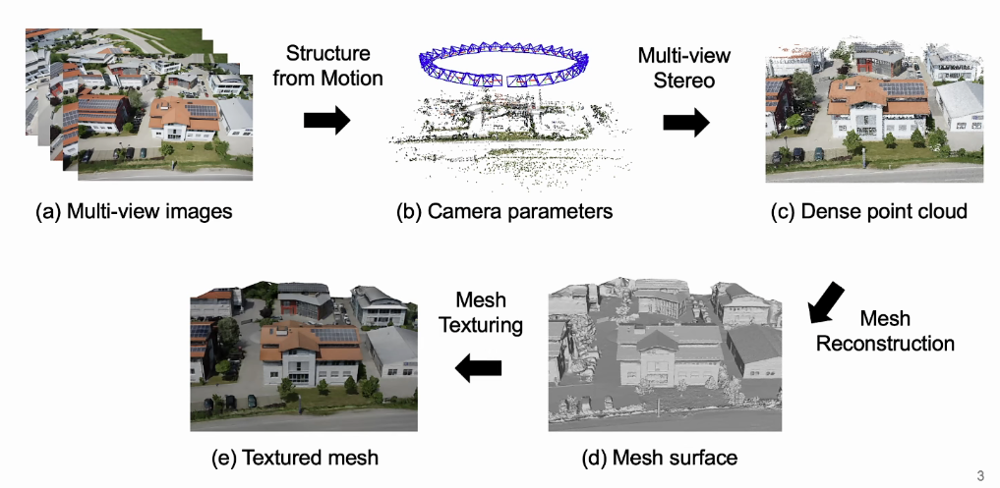
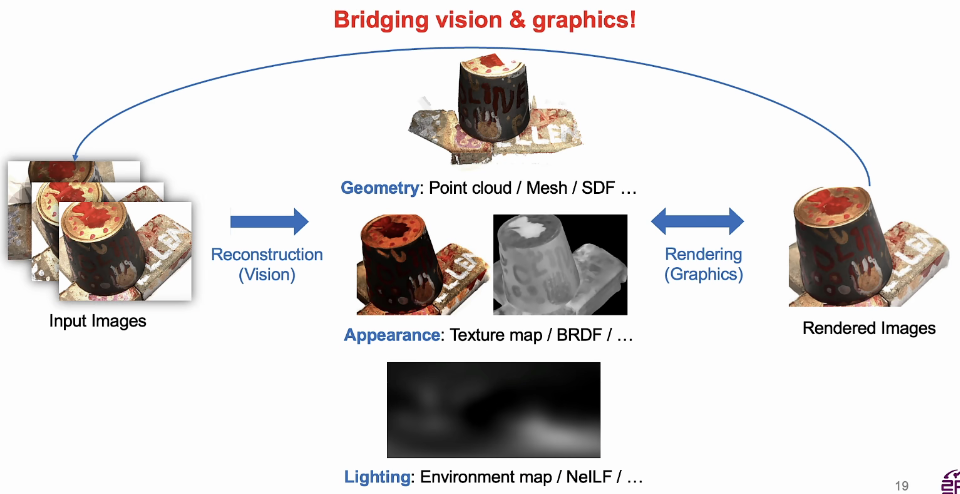
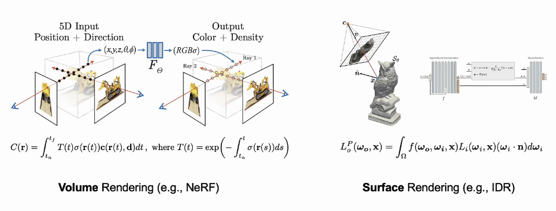
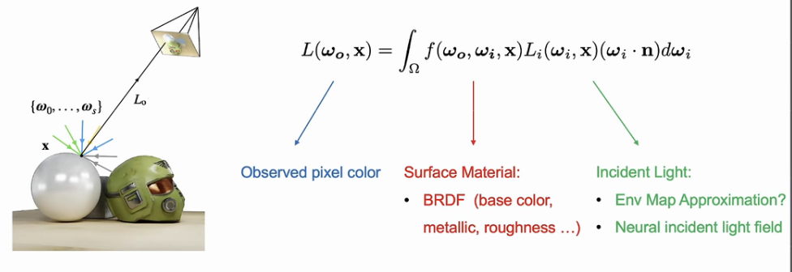
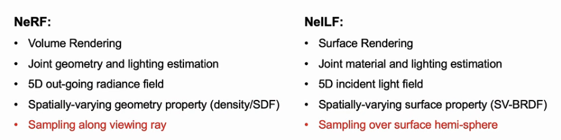
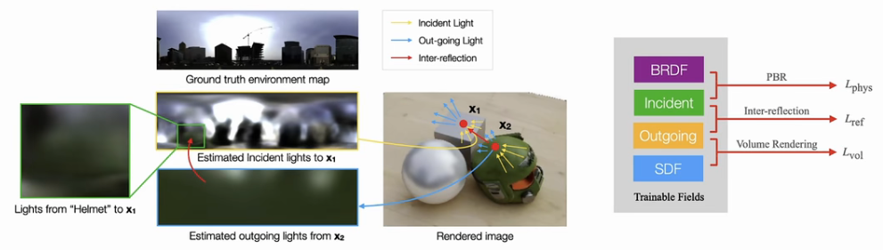
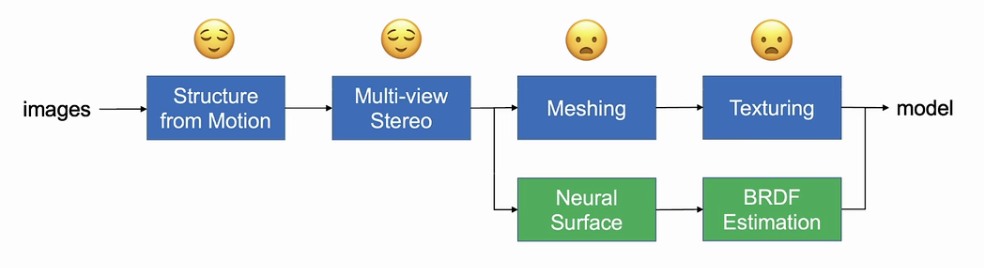

3D Reconstruction Based on NeRF
photogrammetry pipeline

几何重建
Classical MVS
计算匹配
- 逐个像素点的匹配
- matching cost: SSD, NCC
- 密度匹配
- cost regularization: semi-global matching, propagation
classical MVS的问题：textureless areas, thin structure
MVSNet (ECCV 2018 oral)
Real-time: ~5s
R-MVSNet
MVSNet的问题：3D CNNs is memory consuming，不能用于大场景
解决方法：sequential regularization
Vis-MVSNet
可见性：有的像素点在其他视角下不可见
解决方法：显式的匹配概率和可见性建模
手机端重建：https://ar.code.com
Differentiable Rendering
渲染：3D → 2D
逆向渲染：2D → 3D

- Volume Rendering: e.g. NeRF
- Surface Rendering: e.g. IDR

MVSDF
可微渲染的问题：geometry-appearance ambiguity (IDR)：不正确的几何也可以渲染出看起来靠谱的渲染
解决方法：
- 几何先验：用MVSNet的点云进行初始化
- regularizations：MVSNet的depth map加进来作为regularization
RegSDF
idea来源于传统graphics中的smoothness function，应用到regularization中需要考虑representation从mesh换成了SDF或者NeRF
- Minimum surface constraint
- Hessian smoothness
材质重建
NelLF (ECCV 2022)

Env map的假设是无限远的环境光，而室内场景不适合进行这种假设。
用NelLF模拟入射光和BRDF（材质）：
- 完全的5D入射光场
- 任何静态场景的直接/间接光照
- 不需要做ray tracing & bouncing

NelLF++ (ICCV 2023)
通过PBR和inter-reflection，把NeRF和NelLF合在一起：光场=出射光场（NeRF）+入射光场（NelLF）


Future Works
- material & lighting estimation
- dynamic 3D reconstruction
- point-based differentiable rendering
- 以前点云的问题是不好做渲染，now: gaussian splatting
- 点云优点：容易做编辑
概念
SfM
SfM的输入是一段motion或者一段2D图像序列，不需要任何相机的信息，相对位姿是需要在重建之前计算的。然后通过2D图之间的匹配可以推断出相机的各项参数。Corresponding points可以用SIFT，SURF来匹配，也可以用最新的AKAZE（SIFT的改进版，2010）来匹配。而Corresponding points的跟踪则可以用Lucas-Kanede的 Optical Flow 来完成。
在SfM中，误匹配会造成较大的Error，所以要对匹配进行筛选，目前流行的方法是RANSAC（Random Sample Consensus）。2D的误匹配点可以应用3D的Geometric特征来进行排除。
Optical Flow
MVS
COLMAP
COLMAP 是一种通用的运动结构 (SfM) 和多视图立体 (MVS) 管道，具有图形和命令行界面。它为有序和无序图像集合的重建提供了广泛的功能。该软件是在新的 BSD 许可下获得许可的。最新的源代码可在GitHub上获得。COLMAP 建立在现有作品的基础上，在 COLMAP 中使用特定算法时，请同时引用源代码中指定的原始作者。
Marching cubes
Marching cubes 是一种重建算法，具体步骤如下：
- 将一个3D几何体划分为若干个小正方体（体素化）。
- 判断每一个体素的顶点是否在3D几何体内。
- 通过体素顶点可以进行重建。
在存储方面，可以按照栅格顶点的状态进行分类。
SDF
SDF是一种表面几何的表达方式。
Differentiable Rendering
传统的渲染过程其实就是从3D空间到2D空间的一个过程。反过来，我们希望从一张图片，得到三维的场景信息（几何数据、相机参数、光照参数等），这个从2D到3D的过程被称为逆向渲染。可微渲染是逆向渲染的一种方法。
可微渲染初始需要以下两个资源：
- 参考图片（Ground truth）：二维目标图片。可微渲染的目标就是使得渲染的结果无限接近这张参考图片。
- 初始场景参数：可以是一个大致接近于真实场景的粗略的三维场景，也可以是完全随机的三维场景。
可微渲染两个部分：
- 前向渲染：这和我们传统的渲染流程是一样的，都是根据场景参数渲染出一张二维图片。
- 反向传播：我们做完前向渲染之后，需要将渲染结果与Ground truth做比较得到loss，再将梯度反向传播到场景参数中，实现优化。
传统的渲染管线做不到反向传递梯度。